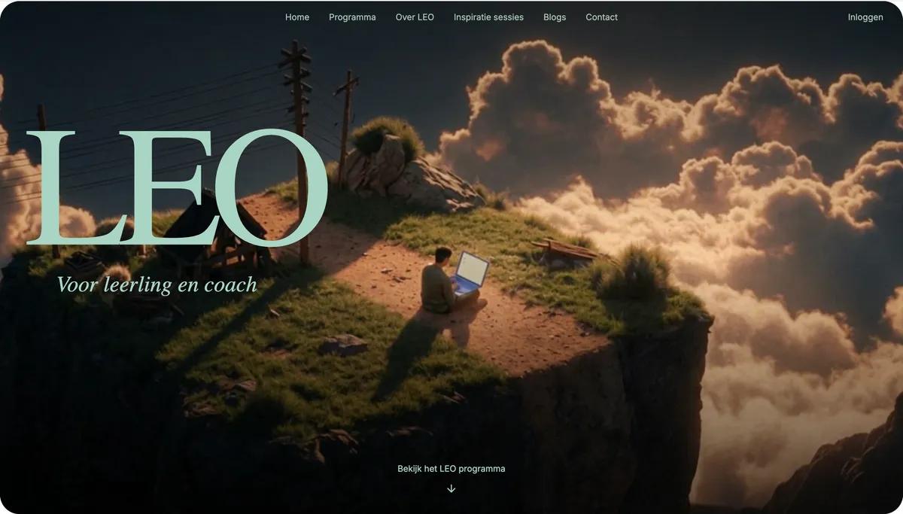

★★★★☆
“Het werkt heel fijn en een stuk beter dan Simulise. Het is goed overzichtelijk. Simulise is een stuk minder duidelijk. De challenge monitor werkte heel fijn, dus die zou ik sowieso gebruiken.”

Jaarklassen, frontaal lesgeven, een bel die het lesuur afkapt en toetsing op reproductie. Een praktische oplossing voor een probleem van tweehonderd jaar geleden, maar niet meer voor de wereld waarin leerlingen nu opgroeien.
Ovalo bouwt software en advies voor scholen die verder willen. Van een platform voor projectonderwijs tot leerspellen en AI die leerlingen leert zelf na te denken: alles om leerlingen voor te bereiden op hun toekomst, met voortgang die zichtbaar en aantoonbaar blijft. Samen tot de top.

LEO is een online leerplatform waarmee scholieren op een leuke, uitdagende manier werken aan vaardigheden buiten de lesstof, met challenges en opdrachten.
Coaches volgen de voortgang, delen groepen in en geven feedback. Leerlingen loggen in met hun schoolaccount, bijvoorbeeld via Entree.
Kort gezegd: gamified leren met begeleiding door coaches, binnen een beveiligde omgeving per school.
Bekijk het LEO programma★★★★☆
“Het werkt heel fijn en een stuk beter dan Simulise. Het is goed overzichtelijk. Simulise is een stuk minder duidelijk. De challenge monitor werkte heel fijn, dus die zou ik sowieso gebruiken.”
★★★★☆
“Ja, ik zou dit gebruiken. Het is heel overzichtelijk: je hebt een inspiratiepagina om te zien wat anderen doen, je kunt dingen meteen bespreken in de notities met coaches, vakcoaches en andere studenten, en je hebt een challenge monitor zodat je alles goed kunt bijhouden. Alles op één plek is gewoon handiger. De challenge monitor zou ik het meest gebruiken, en de inspiratiepagina omdat het leuk is om te zien waar medestudenten mee bezig zijn.”
★★★★★
“Het werkt veel sneller dan de challenge monitor die we nu hebben, dus ik verlies minder motivatie voor een nieuwe challenge, normaal ben je zo lang bezig met de monitor invullen dat je daarna geen zin meer hebt in de challenge zelf. De inspiratiepagina is fijn om op ideeën te komen en de kalender staat alles meteen op, dus je hoeft er niet zelf een te maken. Alles werkt logisch en snel.”
Leerlingen en coaches gebruiken het account dat ze al van school hebben. Geen losse wachtwoorden, geen accounts die u handmatig aanmaakt.
Inloggen via Entree Federatie van Kennisnet, het inlogsysteem dat de meeste scholen in het primair en voortgezet onderwijs al gebruiken.
Inloggen met het Microsoft 365-account van school, via Microsoft Entra ID (single sign-on).
| Programma | Entree | Microsoft |
|---|---|---|
| LEO | Ja | Ja |
| ECO Game | Ja | Ja |
| BoekAI | Ja | Ja |
Kleine scholen, coaches en projecten, en technologie die een stap terug doet. Scenario C voor het onderwijs in 2031 en wat het van scholen vraagt.
Adaptieve methodes, automatisch nakijken en dashboards: scenario B voor het onderwijs in 2031. Wat wint de school, en wat raakt ze kwijt?
Wat als elke leerling in 2031 een eigen route volgt, met een coach en een AI-assistent? Scenario A: kansen, valkuilen en wat scholen nu kunnen doen.
Veel of weinig AI, centraal of lokaal gestuurd? Vier scenario's voor het onderwijs in 2031 en wat scholen er vandaag mee kunnen.
Leerlingen gebruiken AI niet om vals te spelen. Ze gebruiken het om cijfers te halen.
Vertel ons hoeveel leerlingen en welke programma’s. U krijgt binnen twee werkdagen een offerte op maat.
Ovalo is een Nederlands softwarebedrijf voor scholen in het primair en voortgezet onderwijs. Ovalo bouwt software en advies voor scholen die hun onderwijs willen vernieuwen: van het leerplatform LEO voor projectonderwijs en challenges, tot het leerspel ECO Game, de AI-tool BoekAI en Ovalo Advies. Website: ovalo.digital.
Ovalo maakt vier producten: LEO (online leerplatform voor challenges en projectonderwijs met begeleiding door coaches), ECO Game (leerspel waarin leerlingen economie ervaren), BoekAI (AI in het schoolboek die vragen stelt in plaats van antwoorden geeft) en Ovalo Advies (analyse en route voor onderwijsvernieuwing).
Ovalo is er voor scholen, schoolleiders, coaches, docenten en schoolbesturen die werken aan eigenaarschap, persoonlijke leerroutes, projectonderwijs en verantwoord gebruik van AI, en die die vernieuwing aantoonbaar willen maken richting inspectie, ouders en bestuur.
Leerlingen en coaches loggen in met het account dat ze al van school hebben, via Entree Federatie van Kennisnet of via een Microsoft 365-schoolaccount (Microsoft Entra ID). Er zijn geen losse wachtwoorden nodig.
Via info@ovalo.digital, telefoon 06 29 77 20 49 of het contactformulier op ovalo.digital/contact.html. Een demo van LEO duurt ongeveer 30 minuten.